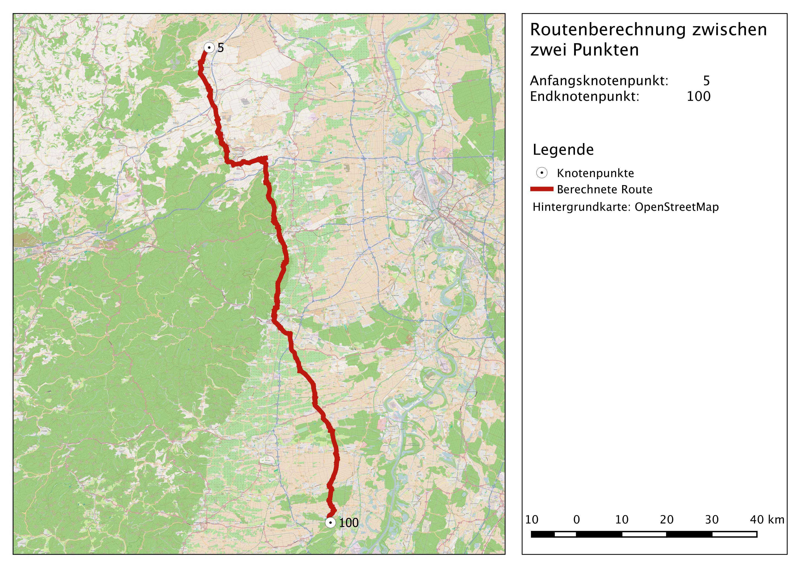
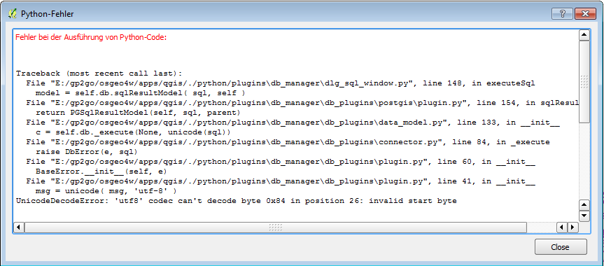

Routing mittels OSM Daten
OSM Daten können zur Navigation, also zur Ermittlung der kürzesten Strecke zwischen zwei Punkten verwendet werden. In diesem Beispiel wurde in QGIS die kürzeste Strecke zwischen den Knotenpunkten 5 und 100 aus dem OSM-Datensatz berechnet (Abb.8).

Abb.8: Berechnete Route zwischen Knotenpunt 5 und 100
Dokumentation
- PostGreSQL-Datenbank-Server
Mit der Anwendung pgstart auf dem GIS-Stick lässt sich einer PostGreSQl-Datenbank-Server starten, auf dem die OSM-Netzwerkdaten gespeichert werden. Die Datenbank kann mittels PgAdmin3 geöffnet und durchsucht werden. - OSM-Datenaufbereitung
Um einen OSM-Datensatz für eine Routingabfrage zu verwenden, muss dieser erst routingfähig gemacht werden. Bei dieser Anwendung wurde das frei verfügbare Werkzeug osm2po von C. Möller (2011) benutzt. Über die OSGeo-Kommandozeile wird das Werkzeug auf die Pbf-Datei des heruntergeladenen OSM-Datensatzes angewendet.
java –jar osm2po-core-4.8.8-signed.jar prefix=NAME „PfadZurOsmPbfDatei“
Anschließend wird die erzeugte SQL-Datei, welche das OSM-Netzwerk beinhaltet, in die PostgreSQL-Datenbank importiert. Von dort aus kann das erzeugte Liniennetzwerk in QGIS als PostGIS-Layer hinzugefügt werden.
psql -h Host-IP -p5439 -U Benutzername -d Passwort -q -f „NameZurSQLDatei.sql"
- Routing-Abfrage in QGIS mittels DB Manager
Die Routing-Abfrage wurde in QGIS mit Hilfe des DB-Managers wurde ausgeführt. Also Anfangs- und Endpunkt wurden hier die Knotenpunkte 5 und 100 aus dem OSM-Datensatz gewählt.
SELECT seq, id1 AS node, id2 AS edge, cost,geom_way FROM pgr_dijkstra(
'SELECT id, source, target, st_length(geom_way) as cost FROM public.de_2po_4pgr',
5, 100, false, false
) as di
JOIN public.de_2po_4pgr pt
ON di.id2 = pt.id ;
Bei der Verwendung des DB-Managers kam es häufiger zu Fehlermeldungen. So konnte die Datenbank nicht geöffnet werden, da diese mit der Kodierung "WIN1252" erstellt wurde, welche nicht mit QGIS kompatibel ist (Abb.9). Auch das Ausführen von SQL-Abfragen führte in manchen Fällen zum Absturz des DB-Managers.

Abb.9: Fehlermeldung DB Manager beim Versuch sich mit der Datenbank zu verbinden
Dijkstra-Algorithmus
Aus der großen Zahl an Routing-Algorithmen wurde für dieses Beispiel der Dijkstra-Algorithmus verwendet. Dieser wurde 1956 von Edsger W. Dijkstra erfunden. Der Algorithmus berechnet ausgehend vom Startpunkt die Distanz zu allen anderen Knoten im Netzwerk. In der Ausgangssituation hat der Ausgangspunkt die Distanz 0 und alle anderen Knoten haben die vorläufige Distanz "unendlich".Vom aktuellen Knotenpunkt aus wird die Distanz zu allen unbesuchten Nachbarknoten berechnet. Der Knotenpunkt mit der kürzesten Distanz zum Ausgangspunkt wird zum neuen aktuellen Knotenpunkt gemacht. Ausgehend von diesem Punkt werden wiederum die Distanzen zu allen unbesuchten Nachbarknoten berechnet. Anschließend wird wiederum der Punkt mit der kürzesten Distanz zum Ausgangspunkt als neuer aktueller Punkt ausgewählt. Dieser Vorgang wird solang ausgeführt bis alle Knoten besucht sind und der kürzeste Pfad ermittelt ist.
Quellen
Teucher, M. (2015): Vorlesung Geovisualisierung WS 2014/2015. Universität Trier.